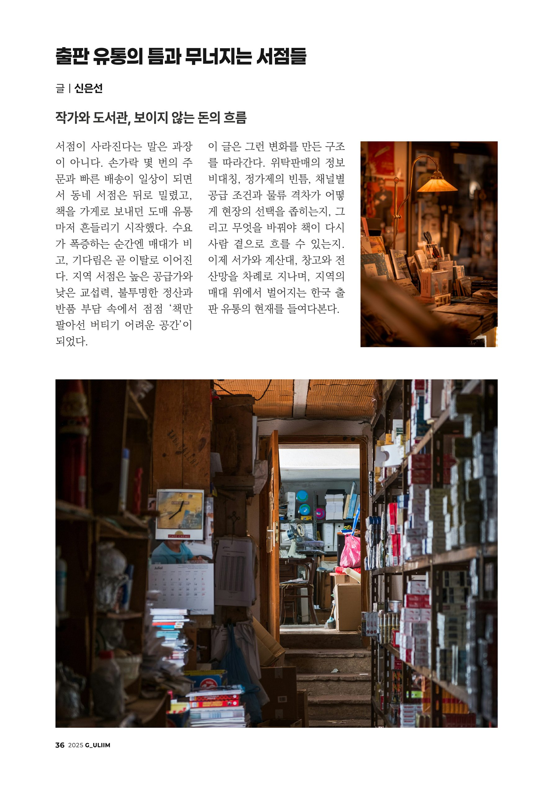
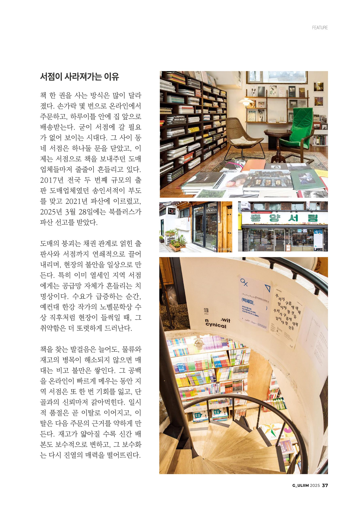
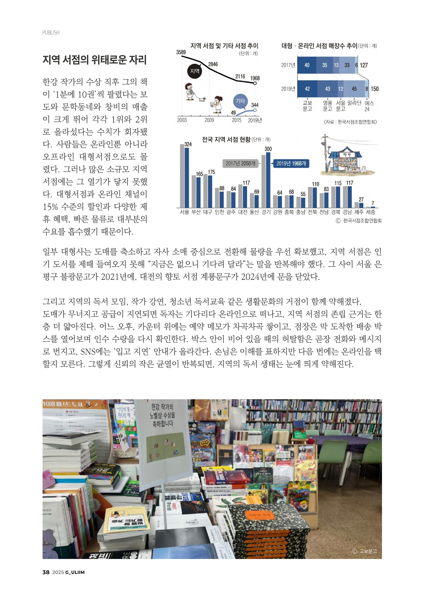
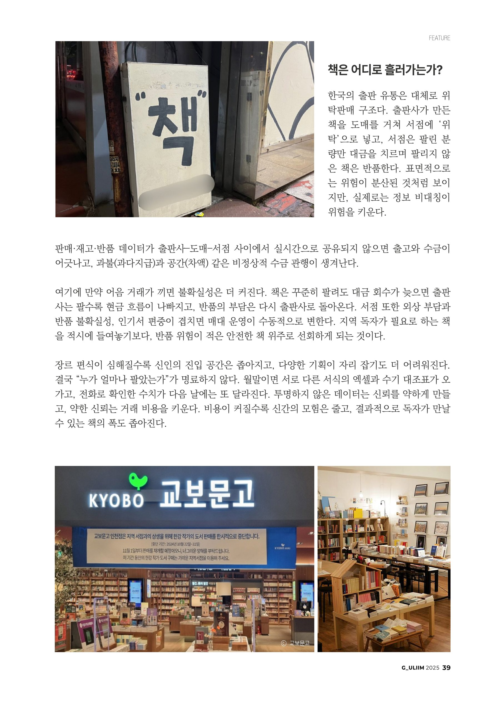
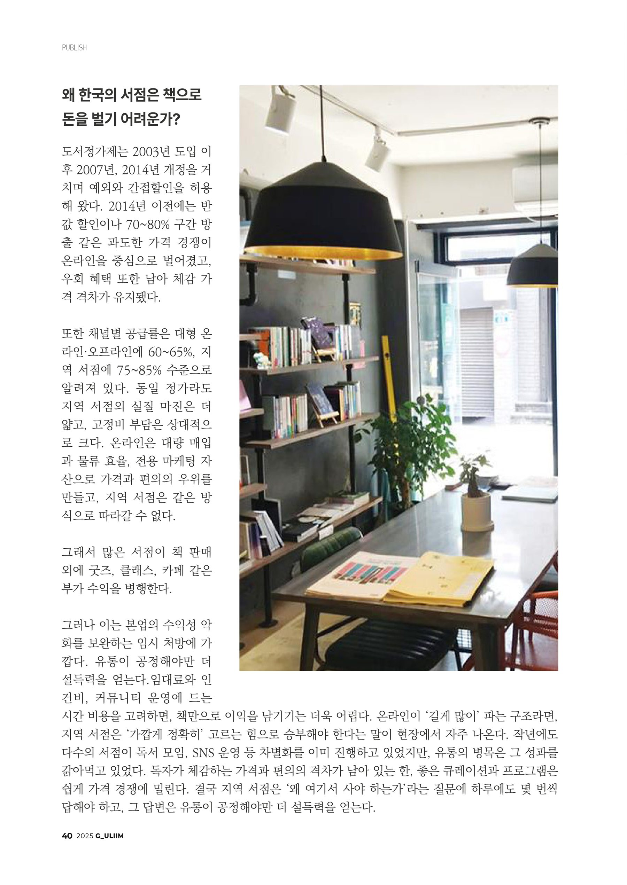
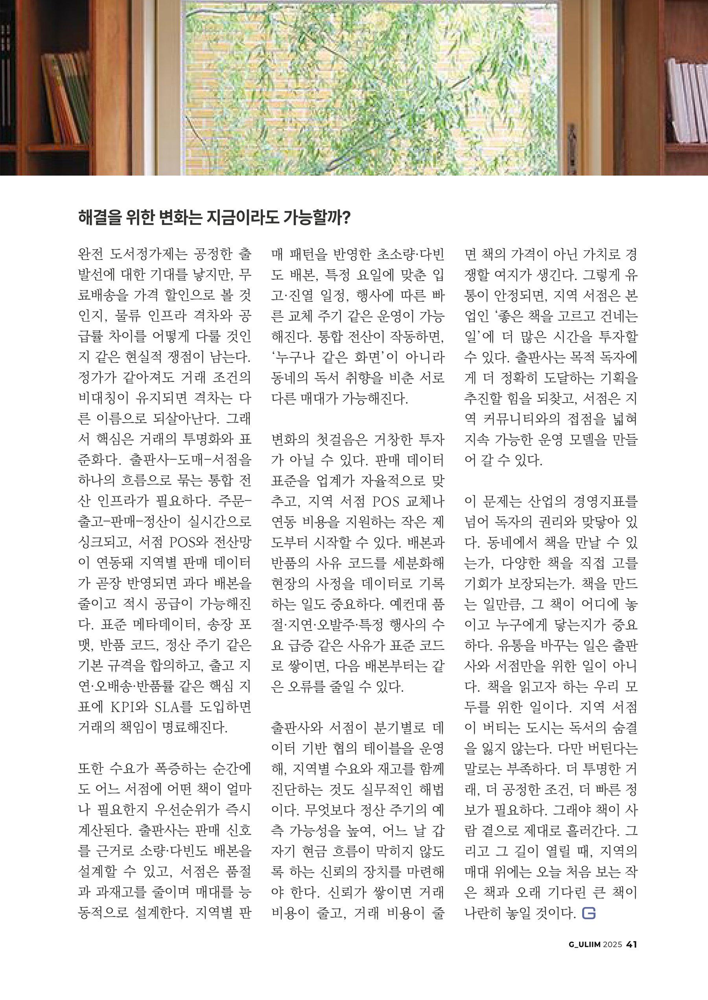

출판유통의 틈과 무너지는 서점들
지면에서 옮긴 텍스트예요 · 사진과 레이아웃은 ‘지면으로 보기’에서 볼 수 있어요
작가와 도서관, 보이지 않는 돈의 흐름
서점이 사라진다는 말은 과장이 아니다. 손가락 몇 번의 주문과 빠른 배송이 일상이 되면서 동네 서점은 뒤로 밀렸고, 책을 가게로 보내던 도매 유통마저 흔들리기 시작했다. 수요가 폭증하는 순간엔 매대가 비고, 기다림은 곧 이탈로 이어진다. 지역 서점은 높은 공급가와 낮은 교섭력, 불투명한 정산과 반품 부담 속에서 점점 ‘책만 팔아선 버티기 어려운 공간’이 되었다.
이 글은 그런 변화를 만든 구조를 따라간다. 위탁판매의 정보 비대칭, 정가제의 빈틈, 채널별 공급 조건과 물류 격차가 어떻게 현장의 선택을 좁히는지, 그리고 무엇을 바꿔야 책이 다시 사람 곁으로 흐를 수 있는지. 이제 서가와 계산대, 창고와 전산망을 차례로 지나며, 지역의 매대 위에서 벌어지는 한국 출판 유통의 현재를 들여다본다.
서점이 사라져가는 이유
책 한 권을 사는 방식은 많이 달라졌다. 손가락 몇 번으로 온라인에서 주문하고, 하루이틀 안에 집 앞으로 배송받는다. 굳이 서점에 갈 필요가 없어 보이는 시대다. 그 사이 동네 서점은 하나둘 문을 닫았고, 이제는 서점으로 책을 보내주던 도매업체들마저 줄줄이 흔들리고 있다. 2017년 전국 두 번째 규모의 출판 도매업체였던 송인서적이 부도를 맞고 2021년 파산에 이르렀고, 2025년 3월 28일에는 북플러스가 파산 선고를 받았다.
도매의 붕괴는 채권 관계로 얽힌 출판사와 서점까지 연쇄적으로 끌어내리며, 현장의 불안을 일상으로 만든다. 특히 이미 열세인 지역 서점에게는 공급망 자체가 흔들리는 치명상이다. 수요가 급증하는 순간, 예컨대 한강 작가의 노벨문학상 수상 직후처럼 현장이 들썩일 때, 그 취약함은 더 또렷하게 드러난다.
책을 찾는 발걸음은 늘어도, 물류와 재고의 병목이 해소되지 않으면 매대는 비고 불만은 쌓인다. 그 공백을 온라인이 빠르게 메우는 동안 지역 서점은 또 한 번 기회를 잃고, 단골과의 신뢰마저 갉아먹힌다. 일시적 품절은 곧 이탈로 이어지고, 이탈은 다음 주문의 근거를 약하게 만든다. 재고가 얇아질 수록 신간 배본도 보수적으로 변하고, 그 보수화는 다시 진열의 매력을 떨어뜨린다.
지역 서점의 위태로운 자리
한강 작가의 수상 직후 그의 책이 ‘1분에 10권’씩 팔렸다는 보도와 문학동네와 창비의 매출이 크게 뛰어 각각 1위와 2위로 올라섰다는 수치가 회자됐다. 사람들은 온라인뿐 아니라 오프라인 대형서점으로도 몰렸다. 그러나 많은 소규모 지역 서점에는 그 열기가 닿지 못했다. 대형서점과 온라인 채널이 15% 수준의 할인과 다양한 제휴 혜택, 빠른 물류로 대부분의 수요를 흡수했기 때문이다.
일부 대형사는 도매를 축소하고 자사 소매 중심으로 전환해 물량을 우선 확보했고, 지역 서점은 인기 도서를 제때 들여오지 못해 “지금은 없으니 기다려 달라”는 말을 반복해야 했다. 그 사이 서울 은평구 불광문고가 2021년에, 대전의 향토 서점 계룡문구가 2024년에 문을 닫았다.
그리고 지역의 독서 모임, 작가 강연, 청소년 독서교육 같은 생활문화의 거점이 함께 약해졌다. 도매가 무너지고 공급이 지연되면 독자는 기다리다 온라인으로 떠나고, 지역 서점의 존립 근거는 한층 더 얇아진다. 어느 오후, 카운터 위에는 예약 메모가 차곡차곡 쌓이고, 점장은 막 도착한 배송 박스를 열어보며 인수 수량을 다시 확인한다. 박스 안이 비어 있을 때의 허탈함은 곧장 전화와 메시지로 번지고, SNS에는 ‘입고 지연’ 안내가 올라간다. 손님은 이해를 표하지만 다음 번에는 온라인을 택할지 모른다. 그렇게 신뢰의 작은 균열이 반복되면, 지역의 독서 생태는 눈에 띄게 약해진다.
책은 어디로 흘러가는가?
한국의 출판 유통은 대체로 위탁판매 구조다. 출판사가 만든 책을 도매를 거쳐 서점에 ‘위탁’으로 넣고, 서점은 팔린 분량만 대금을 치르며 팔리지 않은 책은 반품한다. 표면적으로는 위험이 분산된 것처럼 보이지만, 실제로는 정보 비대칭이 위험을 키운다.
판매·재고·반품 데이터가 출판사–도매–서점 사이에서 실시간으로 공유되지 않으면 출고와 수금이 어긋나고, 과불(과다지급)과 공간(차액) 같은 비정상적 수금 관행이 생겨난다.
여기에 만약 어음 거래가 끼면 불확실성은 더 커진다. 책은 꾸준히 팔려도 대금 회수가 늦으면 출판사는 팔수록 현금 흐름이 나빠지고, 반품의 부담은 다시 출판사로 돌아온다. 서점 또한 외상 부담과 반품 불확실성, 인기서 편중이 겹치면 매대 운영이 수동적으로 변한다. 지역 독자가 필요로 하는 책을 적시에 들여놓기보다, 반품 위험이 적은 안전한 책 위주로 선회하게 되는 것이다.
장르 편식이 심해질수록 신인의 진입 공간은 좁아지고, 다양한 기획이 자리 잡기도 더 어려워진다. 결국 “누가 얼마나 팔았는가”가 명료하지 않다. 월말이면 서로 다른 서식의 엑셀과 수기 대조표가 오가고, 전화로 확인한 수치가 다음 날에는 또 달라진다. 투명하지 않은 데이터는 신뢰를 약하게 만들고, 약한 신뢰는 거래 비용을 키운다. 비용이 커질수록 신간의 모험은 줄고, 결과적으로 독자가 만날 수 있는 책의 폭도 좁아진다.
왜 한국의 서점은 책으로 돈을 벌기 어려운가?
도서정가제는 2003년 도입 이후 2007년, 2014년 개정을 거치며 예외와 간접할인을 허용해 왔다. 2014년 이전에는 반값 할인이나 70~80% 구간 방출 같은 과도한 가격 경쟁이 온라인을 중심으로 벌어졌고, 우회 혜택 또한 남아 체감 가격 격차가 유지됐다.
또한 채널별 공급률은 대형 온라인·오프라인에 60~65%, 지역 서점에 75~85% 수준으로 알려져 있다. 동일 정가라도 지역 서점의 실질 마진은 더 얇고, 고정비 부담은 상대적으로 크다. 온라인은 대량 매입과 물류 효율, 전용 마케팅 자산으로 가격과 편의의 우위를 만들고, 지역 서점은 같은 방식으로 따라갈 수 없다.
그래서 많은 서점이 책 판매 외에 굿즈, 클래스, 카페 같은 부가 수익을 병행한다.
그러나 이는 본업의 수익성 악화를 보완하는 임시 처방에 가깝다. 유통이 공정해야만 더 설득력을 얻는다. 임대료와 인건비, 커뮤니티 운영에 드는 시간 비용을 고려하면, 책만으로 이익을 남기기는 더욱 어렵다. 온라인이 ‘길게 많이’ 파는 구조라면, 지역 서점은 ‘가깝게 정확히’ 고르는 힘으로 승부해야 한다는 말이 현장에서 자주 나온다. 작년에도 다수의 서점이 독서 모임, SNS 운영 등 차별화를 이미 진행하고 있었지만, 유통의 병목은 그 성과를 갉아먹고 있었다. 독자가 체감하는 가격과 편의의 격차가 남아 있는 한, 좋은 큐레이션과 프로그램은 쉽게 가격 경쟁에 밀린다. 결국 지역 서점은 ‘왜 여기서 사야 하는가’라는 질문에 하루에도 몇 번씩 답해야 하고, 그 답변은 유통이 공정해야만 더 설득력을 얻는다.
해결을 위한 변화는 지금이라도 가능할까?
완전 도서정가제는 공정한 출발선에 대한 기대를 낳지만, 무료배송을 가격 할인으로 볼 것인지, 물류 인프라 격차와 공급률 차이를 어떻게 다룰 것인지 같은 현실적 쟁점이 남는다. 정가가 같아져도 거래 조건의 비대칭이 유지되면 격차는 다른 이름으로 되살아난다. 그래서 핵심은 거래의 투명화와 표준화다. 출판사–도매–서점을 하나의 흐름으로 묶는 통합 전산 인프라가 필요하다. 주문–출고–판매–정산이 실시간으로 싱크되고, 서점 POS와 전산망이 연동돼 지역별 판매 데이터가 곧장 반영되면 과다 배본을 줄이고 적시 공급이 가능해진다. 표준 메타데이터, 송장 포맷, 반품 코드, 정산 주기 같은 기본 규격을 합의하고, 출고 지연·오배송·반품률 같은 핵심 지표에 KPI와 SLA를 도입하면 거래의 책임이 명료해진다.
또한 수요가 폭증하는 순간에도 어느 서점에 어떤 책이 얼마나 필요한지 우선순위가 즉시 계산된다. 출판사는 판매 신호를 근거로 소량·다빈도 배본을 설계할 수 있고, 서점은 품절과 과재고를 줄이며 매대를 능동적으로 설계한다. 지역별 판매 패턴을 반영한 초소량·다빈도 배본, 특정 요일에 맞춘 입고·진열 일정, 행사에 따른 빠른 교체 주기 같은 운영이 가능해진다. 통합 전산이 작동하면, ‘누구나 같은 화면’이 아니라 동네의 독서 취향을 비춘 서로 다른 매대가 가능해진다.
변화의 첫걸음은 거창한 투자가 아닐 수 있다. 판매 데이터 표준을 업계가 자율적으로 맞추고, 지역 서점 POS 교체나 연동 비용을 지원하는 작은 제도부터 시작할 수 있다. 배본과 반품의 사유 코드를 세분화해 현장의 사정을 데이터로 기록하는 일도 중요하다. 예컨대 품절·지연·오발주·특정 행사의 수요 급증 같은 사유가 표준 코드로 쌓이면, 다음 배본부터는 같은 오류를 줄일 수 있다.
출판사와 서점이 분기별로 데이터 기반 협의 테이블을 운영해, 지역별 수요와 재고를 함께 진단하는 것도 실무적인 해법이다. 무엇보다 정산 주기의 예측 가능성을 높여, 어느 날 갑자기 현금 흐름이 막히지 않도록 하는 신뢰의 장치를 마련해야 한다. 신뢰가 쌓이면 거래 비용이 줄고, 거래 비용이 줄면 책의 가격이 아닌 가치로 경쟁할 여지가 생긴다. 그렇게 유통이 안정되면, 지역 서점은 본업인 ‘좋은 책을 고르고 건네는 일’에 더 많은 시간을 투자할 수 있다. 출판사는 목적 독자에게 더 정확히 도달하는 기획을 추진할 힘을 되찾고, 서점은 지역 커뮤니티와의 접점을 넓혀 지속 가능한 운영 모델을 만들어 갈 수 있다.
이 문제는 산업의 경영지표를 넘어 독자의 권리와 맞닿아 있다. 동네에서 책을 만날 수 있는가, 다양한 책을 직접 고를 기회가 보장되는가. 책을 만드는 일만큼, 그 책이 어디에 놓이고 누구에게 닿는지가 중요하다. 유통을 바꾸는 일은 출판사와 서점만을 위한 일이 아니다. 책을 읽고자 하는 우리 모두를 위한 일이다. 지역 서점이 버티는 도시는 독서의 숨결을 잃지 않는다. 다만 버틴다는 말로는 부족하다. 더 투명한 거래, 더 공정한 조건, 더 빠른 정보가 필요하다. 그래야 책이 사람 곁으로 제대로 흘러간다. 그리고 그 길이 열릴 때, 지역의 매대 위에는 오늘 처음 보는 작은 책과 오래 기다린 큰 책이 나란히 놓일 것이다.
6쪽 · 지면을 누르면 크게 볼 수 있어요





